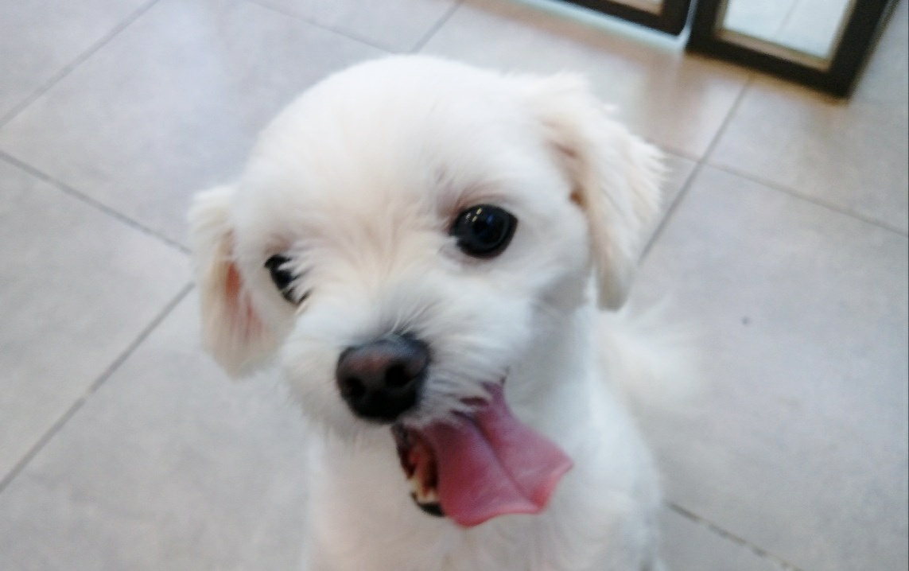
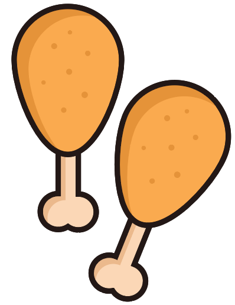

<-Back to Home
Information

- 짱가(말티즈, 7살)
- 생일은 7월 22일
- 가장 좋아하는 장난감은 고기 인형 
- 3개월 때 가족이 되어 쭉 함께하고 있는 막내동생!

산책과 장난감, 그리고 간식을 정말 좋아해요!
할 줄 아는 것은 '손, 앉아, 돌아, 기다려'까지 총 4개!
간식을 줄 때면 눈이 반짝반짝해져서 지시에 따라 손을 주고 빙글빙글 돕니다!
Toy
갖고 있는 장난감은 이렇게 네 가지예요.
인형을 물고 와서 같이 놀자고 조르는 일도 많은 애교쟁이입니다!
짱가의 하루는
- 장난감을 물고 놀기
- 누나가 던져주는 공 물어오기
- 발치에 누워 낮잠 자기
- 사료와 간식 먹기
이런 것들로 이루어져 있어요.
주로 이 루틴에 따라 움직입니다.
[TOP]